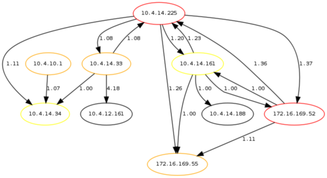

dame una consola
index | OSiUX | blog | docs | charlas | rss
qué és una consola?
- Suele usarse indistintamente el termino shell, terminal, emulador de terminal, intérprete de comandos.
- Se puede decir que es una interface de texto que permite ingresar instrucciones a un programa informático.
porqué usar la consola?
- Uno de los principales beneficios es la automatización de las tareas.
- Es la interconexión de comandos la mayor ventaja, ya que esto permite escribir rápidamente soluciones que no tienen una aplicación específica que las resuelva.
- Está siempre disponible en todas las distribuciones de GNU/Linux, BSD, Unix, etc.
todo es un archivo
En sistemas *nix todo es un archivo, es decir todos los
dispositivos, las particiones de disco, CDs, diskettes, tarjeta de
sonido, video, etc.
permisos
r = read 4 w = write 2 x = execute 1
# usuario y grupo todo, el resto nada. 770 rwxrwx-- # solo dueño y grupo leer y ejecutar. 550 r-xr-x-- # solo dueño tiene escritura, todos pueden leer. 644 rw--r--r
comandos básicos
man |
leer el manual, es el mas importante! |
echo |
eco, imprime texto en pantalla |
ls |
listar archivos y directorios |
pwd |
mostrar directorio actual |
cd |
cambiar directorio |
cp |
copiar |
rm |
borrar |
mv |
mover |
mkdir |
crear directorio |
cat |
muestra contenido de un archivo |
más comandos
more |
pagina la salida de un archivo |
sort |
ordena |
wc |
cuenta cantidad líneas y palabaras |
grep |
filtra un texto |
sed |
editor de texto en línea |
awk |
procesa texto |
find |
busca archivos |
chmod |
cambia permisos |
chown |
cambia el propietario de un archivo |
alias |
define un alias para un comando |
ps |
muestra procesos en ejecucion |
stdinput
En lugar de tipear podemos enviar un archivo como la entrada estandard de un comando:
mail osiux@osiux.com.ar < archivo.txt
stdoutput
Podemos almacenar en un archivo el resultado de la ejecución de un comando:
# sobreescribe ls *.png >lista.txt # agrega ls *.txt >>lista.txt
pipe
Convertir la salida standard de un comando en la entrada standard de otro comando permite conectar procesos:
ls | sort

expresiones regulares
[a-z] |
rango de la a a la z |
[A-Z] |
rango de la A a la Z |
[0-9] |
rango de 0 a 9 |
[^..] |
negación |
^ |
principio de línea |
$ |
fin de línea |
. |
cualquier caracter |
? |
cero o una aparición |
* |
ninguna o muchas repeticiones |
+ |
una o mas repeticiones |
aplicaciones
mutt, pine, fetchmail reminder, wyrd vim, emacs, joe, nano, mcedit, vim-outliner w3m, lynx, elinks, rtorrent, newsbeuter freetalk, cabber, irssi, weechat, center-im moc, rippit, aumix, alsamixer ftp, ncftp, wget, httrack mc, rsync, rdiff-backup vlc, mplayer
más aplicaciones
ssh, telnet, screen, ajaxterm tig, git, svn, bzr, mercurial mysql, msqldump python, ipython, bpython graphviz, imagemagick, gnuplot parted, testdisk, dd, partimage gnupg, dmsetup, bcrypt, truecrypt htop, ethtool, netcat, nmap, wicd-curses diff, patch, make, base64, vim-diff vnstat, iftop, nload, wicd-curses pdf2text, html2text, python-docutils, rst2pdf
ejemplos
# cuál es mi ip? ip r | grep -o src.[0-9.]+ | awk '{print $2}' # cuál es mi mac? ifconfig eth0 | grep HWaddr | awk '{print $5}' # sé la mac, pero cúal es la ip? tcpdump -ennqti eth0 \( arp or 600pxp \) | grep "48:5b:39:6e:f4:d4" # encender la compu remotamente wakeonlan 48:5b:39:6e:f4:d4 # quíen está consumiendo todo el ancho de banda? iftop -i eth0 # ips entregadas por dhcp? egrep -o "[0-9]+>[0-9]+>[0-9]+>[0-9]+" dhcpd.leases | uniq | wc -l # obtener una línea específica de un archivo head -30 /var/log/messages | tail -1 # reemplazar texto en varios archivos find -name '*.php' | while read i;do cat $i | \ sed s/GNU/GPL/g >$i.tmp;cat $i.tmp>$i;done
más ejemplos
# buscar en el contenido de una web w3m -dump http://barrapunto.com | grep -i -C2 android w3m -dump http://debian.org/News | grep -i squeeze | grep frozen >/tmp/debian # notificar estado batería if [ "$BAT_STATUS" = "Discharging" ];then \ if [ $BAT_PERCENT -le 25 ];then \ notify-send -u critical "$MSG" "$BAT_PERCENT";fi else;notify-send "$MSG";fi
vim
Esc |
cambia a modo visual |
a |
agregar texto posición actual |
A |
agregar texto al final línea |
i |
inserta en la posición actual |
I |
inserta al inicio de la línea |
r |
reemplazar un caracter |
R |
modo reemplazar |
x |
borra caracter a la derecha |
X |
borra caracter a la izquierda |
y |
copiar |
p |
pegar |
más vim
d |
eliminar |
. |
repite última función |
: |
cambia a modo comando |
:q |
salir si no hubo cambios |
:q! |
salir sin guardar cambios |
:wq |
guardar y salir |
:e |
editar archivo |
:. |
línea actual |
:1,. |
desde primer línea a la actual |
:.,$ |
desde línea actual a la última |
:5,15 |
desde línea 5 a la número 15 |
telnet mail
telnet localhost 25 HELO branca.osiux.com.ar MAIL FROM: osiris@branca.osiux.com.ar RCPT TO: osiux@branca.osiux.com.ar DATA Subject: prueba correo local usando telnet nero cuando nos tomamos unos fernets? . 250 2.0.0 Ok: queued as 6626586DE6 QUIT
telnet web
telnet google.com 80 Trying 209.85.195.104... Connected to google.com. GET / HTTP/1.0 302 Found Location: http://www.google.com.ar/ Content-Type: text/html; charset=UTF-8 <HTML><HEAD><TITLE>302 Moved</TITLE></HEAD><BODY> <H1>302 Moved</H1>The document has moved <A HREF="http://www.google.com.ar/">here</A>. </BODY></HTML> Connection closed by foreign host.
mysql + bash
# Definir Alias set alias sugar='mysql --default-character-set=utf8 -u sugar -psugar -B sugar' # Ejecutar consulta echo "SELECT user_name FROM users WHERE is_admin = 1;" | sugar # Listado de Tablas set alias tablas='echo "show tables" | sugar | grep -v Tables_in | sort -u' # Listado Tabla Campo set alias tablacampos='echo "show tables" | sugar | grep -v Tables_in | \ while read t; do d=$(echo "desc "$t";" | cct15 | grep -v Field | awk1); \ for c in $d;do echo $t"__"$c;done ;done' # Vaciar todas las tablas que contengan la palabra *calls* sugar < $(echo "show tables" | sugar | grep calls | \ while read t;do echo "TRUNCATE table $t;";done)
mysql + vim
Conexión en
.vimrccommand -range=% Q :<line1>,<line2>w !mysql -u sugar -psugar -B sugar -t -v -v -v
Ejecutar todo el archivo
:Q
Ejecutar la línea actual
:. Q
Ejecutar un rango de líneas
:3,8 Q
Ejecutar desde línea actual hasta el final
:.,$ Q
Usar diccionarios
CTRL-X CTRL-K:set dictionary=tablas, tablacampo
imagemagick
c=0;ls | grep jpg | while read f; \ do mv -v $f $'monte-hermoso-2010-'$c$'.jpg'; \ c=$[$c+1];done for i in *.jpg do convert -filter cubic -resize 640 $i 640-$i done
graphviz
digraph topology {
"10.4.14.225" [color=red]; "10.4.14.33" [color=orange];
"10.4.14.161" [color=yellow]; "172.16.169.52" [color=red];
"172.16.169.55" [color=orange]; "10.4.14.34" [color=yellow];
"172.16.169.52" [color=red]; "10.4.10.1" [color=orange];
"10.4.14.225" -> "10.4.14.33"[label="1.08", style=solid];
"10.4.14.225" -> "10.4.14.161"[label="1.20", style=solid];
"10.4.14.225" -> "172.16.169.52"[label="1.37", style=solid];
"10.4.14.225" -> "172.16.169.55"[label="1.26", style=solid];
"10.4.14.225" -> "10.4.14.34"[label="1.11", style=solid];
"10.4.10.1" -> "10.4.14.34"[label="1.07"];
"172.16.169.52" -> "10.4.14.225"[label="1.36"];
"172.16.169.52" -> "10.4.14.161"[label="1.00"];
"172.16.169.52" -> "172.16.169.55"[label="1.11"];
"10.4.14.161" -> "172.16.169.52"[label="1.00"];
"10.4.14.161" -> "172.16.169.55"[label="1.00"];
"10.4.14.161" -> "10.4.14.188"[label="1.00"];
"10.4.14.161" -> "10.4.14.225"[label="1.23"];
"10.4.14.33" -> "10.4.12.161"[label="4.18"];
"10.4.14.33" -> "10.4.14.225"[label="1.08"];
"10.4.14.33" -> "10.4.14.34"[label="1.00"]; }
dot -Tpng grafo.dot >grafo.png

gnuplot
ping -c10 google.com | grep 600pxp_seq" \ | tr "=" " " | awk '{print $7,$11}' >ping.dat echo 'set title "ping" \ set xlabel "milisegundos" \ set ylabel "secuencia" \ set term png \ set output "ping.png" \ plot "ping.dat" using 1:2 with lines \ quit ' >ping.plt gnuplot ping.plt

ditaa
+---------------------+
+---+ | malbec c978 |
| S | +---------------------+
+-------------------+ | W |<-->| eth0 192.168.10.5 | +------+
| syrah cDBF | | I | | | +------+ | cYEL |
+-------------------+ | T | | ppp0 186.109.85.126 |<-->| ADSL |<->| INET |
| eth0 192.168.10.4 |<->| C | | | +------+ | {o} |
+-------------------+ | H |<-+ | eth2 192.168.20.3 |<-+ +------+
^ +---+ | +---------------------+ |
| | |
v | |
/---------\ | |
| HP 4200 | | +---------------------+ |
| c897 | +---+ | | torrontes c789 | |
\---------/ | S |<-+ +---------------------+ |
| W |<-->| eth0 192.168.10.5 | |
| I | | | |
| T | | eth1 192.168.20.5 |<-+
| C | +---------------------+
| H |<-+
+---+ |
rst2pdf
rst2pdf dame-una-consola.txt rst2pdf -s style -b 1 dame-una-consola.txt
Dudas y comentarios
- osiris@gcoop.coop Cualquier duda pueden consultar por email, prometo responder lo antes posible.
- http://pub.osiux.com/charlas Pueden descargar ésta y otras charlas, incluído el código fuente CC-BY-SA.
- http://pub.osiux.com/charlas/dame-una-consola-slides.pdf
- http://osiux.com/ Mucha data útil (muy poco de mi autoría),
archivos
TXTen formatore-StructuredText.